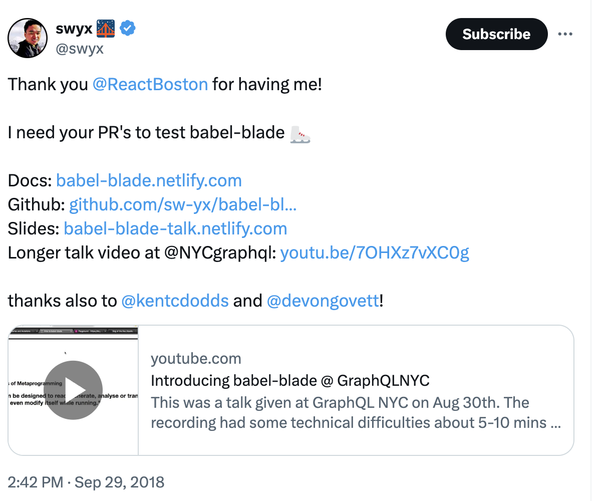
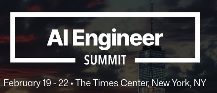
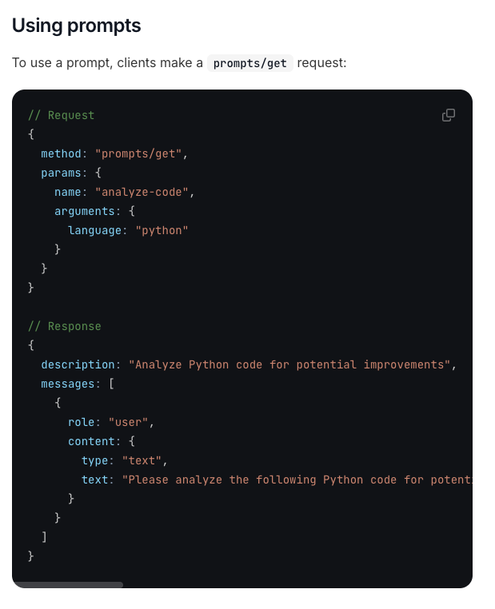

AI/ES/25/ws/What I Learned at the AI Engineer Summit Workshops 2025
What I learned at the AI Engineer Summit 2025 NYC Workshops
What is the AI Engineer Summit?
How I found out about the AI Engineer Summit...
⚡ flash back to @swyx's GraphQL presentation at Conference/React Boston/2018 ...
babel-blade: solving the GraphQL double declaration Problem

swyx 🌉 on X - link- Wayfair threw a great party. Got to know Person/Shawn @swyx Wang, who at that time was working at Netlify as a DevRel.
- ... Time Passes ...
- Now my favorite AI podcast is ... The Latent Space Podcast
About Shawn @swyx Wang

I document the Rise of the AI Engineer on Latent.Space, and am working on the Smol AI company based in San Francisco. I also help devtools startups cross the chasm (devrel, advising and investing) and will always be the champion for Learning in Public!
About Alessio Fanelli

I was born and raised in Rome, but now live in the Bay Area. I'm a Partner at https://decibel.vc/, where I lead Seed and Series A rounds in AI, infrastructure software, security, and dev tools. I'm also the CTO of the firm, leading the development of our internal software platform that we use for programmatic sourcing, tracking projects, etc.
so, what is the AI Engineer Summit?

AI Engineer Summit NYC 2025
This team also runs the AI Engineer World's Fair

so, when was the AI Engineer Summit?
Thu Feb 20 - Leadership Track
Fri Feb 21 - Engineering Track
Sat Feb 22 - Workshops
I only attended the workshops this year. Would love to attend the full event in the future
where was the AI Engineer Summit?
Downtown Manhattan, NYC
Pic 02Jay Conference Bryant Park - 109 W 39th St
AWS - JFK27 (12 W 39th St)
How I got to the AI engineer summit
Many thanks to the leadership team and employer for sponsoring my attendance
Pic 01Port Authority Bus Terminal
Before AIES 25 WS 1 - Building Agents with MCP - Mahesh Murag
- Pic 01
Discussions before the first workshop
1/3 Person/Junrui (Tom) Hu
Getting coffee before the first workshop, I met Tom, AI Lead at HanoverPark, where he's building AI portfolio management, AI inbox analyzer, real-time fund metrics, and an investor portal. $1.3 billion in assets under administration. Based out of NYC, he was at the AI Engineering track on Friday as well.
2/3 - Person/Mike Christensen
3/3 - Person/Hayden Harrow
AIES 25 WS 1 - Building Agents with MCP - Mahesh Murag - #MCP Talk that went viral
Context - #MCP #Examples from David Ondrej - Build Anything with MCP Agents
#Example 1 - using GitHub/MCP enable CursorAI to take actions in GitHub
#Example 2 - enabling CursorAI to interact with Chrome/DevTools with AgentDeskAI/GitHub/browser-tools-mcp
What problem does Model Context Protocol solve?

What does this mean ... for AI Coding? AI Agents in Code editors can now ...
develop technical plans using Jira, Confluence
submit merge requests to GitHub, GitLab, etc
check out a ticket and start working on it
introspect into database, etc
Side-note - Latent Space/Blog/25/03/Why MCP Won
- this talk possibly contributed to MCP going viral in 2025/03
At current pace, MCP will overtake OpenAPI in July

- Person/Mahesh Murag's talk likely contributed to MCP taking over AI social media feeds

- this talk possibly contributed to MCP going viral in 2025/03
The Problem MCP Solves
Introducing Model Context Protocol (MCP)
- MCP standardizes interactions between AI apps (clients) and external systems (servers).

- Inspired by GraphQL and Language Server Protocol.

- Three interaction types: Tools, Resources, Prompts.

- MCP standardizes interactions between AI apps (clients) and external systems (servers).
Rapid Adoption of MCP
MCP Components: Tools, Resources, and Prompts
Tools (Model-controlled)
LLM knows about the tools it has access to, and uses that to decide when to invoke certain actions. These are tiny AI prompts made from a tool schema. Example from GitHub MCP here
declare the parameters the AI will use to call the
GetFileContentstool in natural languageconst GetFileContentsSchema = z.object({ owner: z.string().describe("Repository owner (username or organization)"), repo: z.string().describe("Repository name"), path: z.string().describe("Path to the file or directory"), branch: z.string().optional().describe("Branch to get contents from"), });MCP server tools - a list of mappings between descriptions of tools and that tool's implementation in the API
server.setRequestHandler(..., async () => { return { tools: [ ...{ name: "get_file_contents", description: "Get the contents of a file or directory from a GitHub repository", inputSchema: zodToJsonSchema(files.GetFileContentsSchema), }, ...Key Insight
AI tools are just a tiny LLM prompt that tells an LLM about something it can do
"get_file_contents" - supply "Repository owner (username or organization)" and "Repository name" to "Get the contents of a file or directory from a GitHub repository"
Resources (Application-controlled)
shared state between the Agentic System and the client application
#Example - in ChatGPT/Canvas, this would be the canvas - both the user and the LLM know about the state of the canvas.
NOTE: This is just an example, OpenAI doesn't use MCP for Canvas (yet?)

Prompts (User-controlled):
Predefined, user-controlled interactions triggered by users (kinda like slash commands).

MCP in Action: Claude AI Integration Demo
- Anthropic/Blog/24/12/Building Effective Agents with #MCP
Pic 09
one of the key points of MCP is that the system can discover new capabilities after the agent system is built
agent is an "augmented LLM" running in a loop
you can let users of the agent system connect to their data and you as the developer can focus on the core loop
#Example mcp-agent from lastmileAI
mcp-agentis a simple, composable framework to build agents using #MCP
- Example: Agent system to do deep research on Quantum computing cybersecurity implications
MCP-Agent project structure
Uses sub-agents:
search_agent,fact_checker,report_writerside note - Person/Mahesh Murag uses Windsurf here
MCP Composability & Sampling
Every MCP client can be an MCP Server.
MCP/Sampling allows servers to request inference from clients, ensuring control of privacy and cost.

MCP Inspector & OAuth Authentication
Inspector provides debugging for MCP connections.
OAuth integration simplifies secure service authentication. Scoped permission boundaries can apply.

Autonomous Discovery
Official MCP Registry provides centralized server discovery
Enables agents to find and trust verified MCP servers
Example: Automatic discovery of Grafana MCP for debugging tasks

Server Discovery
Websites can expose MCP server capabilities via
.well-known/mcp.jsonEnables instant discovery of service integrations
Real example: Shopify/MCP integration auto-discovery

#MCP Key EdTech Takeaways
Of course it helps AI Coding agents know more about the other systems (JIRA, GitHub, PostgreSQL, etc)
Each LMS/Course/Teaching Element could express actions AI could take on it as an MCP Server. Any AI application with permission could interact with that Teaching Element Type
Each LMS could be an LMS/Course/Authoring MCP Server for AI-enhanced course development
AI/ES/25/ws/2/GraphRAG - Knowledge Graphs for Agents
Workshop Overview: GraphRAG with Neo4j
Instructor: Alison Cossette, Neo4j Developer Advocate
Goal: Improve AI accuracy using graph-based RAG
Focus: Connecting structured and unstructured data
Alison Cossette
Traditional RAG Limitations
Struggles with context and temporal information
Can't integrate structured and unstructured data well
Lacks transparency in responses
External Data Types
Neo4j Graph Building Blocks
Nodes: Entities (Person, Car)
Relationships: Interactions (KNOWS, LIVES_WITH)
Properties: Node/relationship attributes
Neo4j Graph Components
GraphRAG Architecture
Domain Graph: Structured knowledge base
Lexical Graph: Document chunk relationships
Memory Graph: User interaction history
Domain & Lexical Graph
GraphRAG in Action
Converts natural language to Cypher queries
Uses graph embeddings for semantic search
Combines structured and vector search
GraphRAG Patterns
Key #EdTech Takeaways for GraphRAG
one of the best ways to have an AI gradually develop a "mental model" of a student's abilities relative to the learning goles; see also AI/Digital Twin
possible to take flatfile documents and do entity extraction into a knowledge graph; see also EdTech/Idea/LearnMark for topic extraction, pre-requisite identification, etc - this would help LMS/Course/Authoring for custom courses
- Pic 03
AI/ES/25/ws/3/How Clay Performs Agent Evaluation
Workshop Overview
Presenters: Person/Nick Huang (LangChain), Person/Ratch Sujithan (ClayCo)
Focus: Best practices in evaluating AI agents at various granularity levels
Key takeaway: Comprehensive testing ensures continuous improvement and reliability
Part 1 - Person/Nick Huang from LangChain on Evaluation
See also LangChain/Academy/LangSmith course
Chain vs Agent Issues
Why Evaluate Agents?
Task ambiguity
Missing context
Excessive or ambiguous tool usage
Poor reasoning
Solutions include combining deterministic logic with agentic logic for better control flow
Evaluating Application Versions Over Time
Evaluations track progress through new prompts, models, and architectures
Metrics help verify improvements
Application Progress
Defining Effective Evaluators
Test agent outputs against ground-truth datasets
Evaluators calculate accuracy, hallucination rates, and other metrics
Evaluator Setup
Pairwise Evaluations
Directly compares two versions of an application side-by-side
Clearly identifies improvements
Pairwise Comparison
Feedback Loops from Online Evaluators
Online evaluation enables real-time quality control
Automations triggered by thresholds improve agent performance continuously
Feedback Automation
Granular Evaluations: Breaking Down Agent Tasks
Evaluations performed at different task levels (queries, document retrieval, hallucination checks)
Granular Eval
Multi-turn conversations can be tested individually, or in series

- The structure of how one tests is also determined by the structure of the conversation
- if your conversation has phases, and you need to make assertions against phases, individual tests for phases may make sense
- The structure of the golden datasets match the expected structure of how one tests
Workshop 3, Part 2 Person/Ratch Sujithan from ClayCo on their AI Agent evaluation
ClayCo Demo: LinkedIn Profile Finder

My Notes on this application
Sample recruiter app - Given a person's full name, GitHub username, and GitHub profile link, find their LinkedIn profile URL. Find the topics they are interested in using Stargazers on GitHub. Find their backgrounds, connect it to a LinkedIn profile finder, extract country profile and email, target companies with a certain size and profile, write personalized messages to them
"very small snapshot of what clay can do"
Claygent Evaluation Pipeline
Development Evals: Ensuring quality and stability through CI/CD pipelines
Production/Observability Evals: Analyzing real-world logs to drive strategic decisions
Eval Pipeline Overview
Development Evaluations: CI/CD Testing
Blackbox E2E smoke tests ensure environmental parity
Integration tests prevent regressions
Development Testing
using LangSmith/Evaluator/Online/LLM as a Judge: Automated Quality Checks
Judges evaluate responses on relevance, correctness, and conciseness
Structured scoring system for clear assessment
LLM Judging
Workshop 3 - Key Takeaways for EdTech
LangSmith/Evaluator/Offline are conducted from CICD as part of the pull request process
they are powered by a ground truth collection of curated labels in a golden dataset
LangSmith/Evaluator/Online evaluations are "good enough, quickly" for live-use cases
For phased conversations, each phase should be separately evaluated
Each part of the application should be tested in isolation
In truly Agentic Systems, you need to also evaluate the AI/Tool/Calling
AI/ES/25/ws/4/Multi-Agent Workflows with MCP #MCP
Multi-Agent Workflows Beyond the Chatbox
"Agents aren't really agents unless they can discover and act beyond the chatbox"
MCP enables dynamic environment interaction and resource discovery
Agents can execute complex, context-sensitive tasks autonomously
Intro Slide
Building Custom MCP Clients
Not limited to Claude's built-in client implementation
Framework agnostic but integrates with LangGraph, Autogen, Crew AI
Enables complex workflows beyond simple code generation
Custom MCP Clients
CodeAPI: MCP Workflow Example
CodeAPI Workflow
Lightweight FastAPI server for code manipulation
LangChain, MCP, and LangGraph
automated dependency upgrades, refactoring
AI-Driven Code Migration with LangGraph
LangGraph Studio Example
Automated Java migration from JBoss to Spring Boot
AI handles dependencies and framework transitions
Minimal human interaction, focused on final verification
Automated Test Generation & Verification
Automated Testing Workflow
Multi-agent orchestration to automate software test creation
Agents collaboratively extract context from codebases, Write and review unit tests, Execute and verify tests autonomously
- Pic 12
MCP-Enabled Real-Time Tool Discovery
Dynamic Tool Discovery
Agents dynamically discover available MCP tools at runtime
Agent performed web search via MCP, Automatically adapted tool usage after an initial access error, Demonstrated robust error-handling and recovery
Real-World Example: Automated PR Generation
Automated PR Workflow
AI autonomously generated GitHub PRs for feature requests
Multi-agent system:
Planner agent suggested multiple code implementations
Coder agent implemented selected solutions
Orchestrator managed workflow, ensuring safety and control
Increased development productivity significantly
Scaling AI-Powered Translation: Lessons from Large-Scale Book Translation
Pic 13
- Pic 28
CollegeBot: AI-Driven College Search & Recommendations
Pic 29
- Pic 30
MCP-Powered Telemedicine Assistant: AI-Guided Patient Interaction - 31, 32, 33
Final Takeaways from the Workshop
MCP standardizes agent integration with diverse tools and services
Multi-agent workflows amplify AI capabilities, enabling complex business logic automation
Safety, security, and flexibility are central to effective multi-agent implementations
Emphasizes human curation of AI-generated solutions rather than direct AI autonomy
- Pic 04